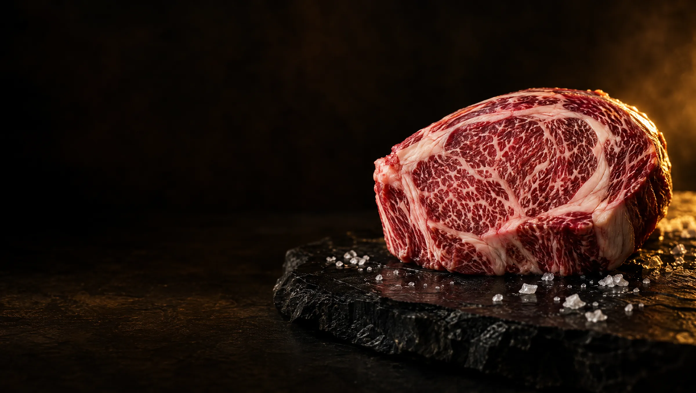

Our Story
Chicago knows steak.
For more than a century, this city set the standard for American beef. Windy City Wagyu carries that standard forward with Australian wagyu: bred from Japanese bloodlines, officially graded for marbling, and fed on grain for 450 days or more.
01 · The city
The city that fed a nation
On Christmas Day 1865, Chicago's Union Stock Yards opened their gates. For the next 106 years, cattle arrived by rail from across the country, and Chicago became the center of the American beef trade.
At their peak, the Yards and the packing houses around them supplied more than 80% of the meat Americans ate. Chicago learned how to judge cattle, how to grade beef and how to cook a great steak, and it never forgot.
The Yards closed in 1971, but their stone gate still stands on Exchange Avenue as a National Historic Landmark. And Chicago is still one of America's great steak cities.
02 · Why we started
Wagyu deserved a clearer label
Wagyu is the most celebrated beef in the world, and one of the most confusing to buy. The same word is used for an animal that's half wagyu and one that's 100% wagyu. Grades are quoted on different scales. Too often, you're asked to take the price on faith.
We started Windy City Wagyu to change that. Every cut we sell comes from Australian cattle with registered Japanese bloodlines, is graded on Australia's official marbling scale, and has its bloodline and its grade printed on the label.
[FOUNDER STORY: who started Windy City Wagyu, the moment that sparked it, and the personal connection to Chicago. Two or three sentences in your own words.]
03 · What we believe
Four promises behind every cut
Bloodline first
Genetics decide how much marbling a steak can have, so we start with the bloodline, and we tell you exactly what it is.
Graded, not guessed
Every animal's beef is scored on Australia's official marbling scale. The number on the label is earned, not estimated.
Patience pays
Our cattle spend at least 450 days on grain, and our Black tier more than 500. Typical American beef gets about 120. Marbling can't be rushed.
Nothing hidden
Every animal is traced from the farm where it was born, with a registered pedigree and no added growth hormones. You'll always know what you're paying for.
04 · The journey
From Australian pasture to your table
Six stages, each one checked.
- 01
Born and tagged
Registered wagyu calves get a national ID tag on the farm where they're born.
- 02
Raised on pasture
They grow up grazing open Australian grassland, with no added growth hormones.
- 03
450+ days on grain
A long, slow finish on grain lets the marbling fully develop.
- 04
Graded
Each animal's beef is scored for marbling and placed in our Black, Gold or White tier by its bloodline.
- 05
Chilled and sealed
Every cut is vacuum-sealed and shipped chilled [never frozen: to confirm].
- 06
Your table
It arrives with its bloodline and marbling score printed on the label.
05 · The people
Chefs, producers and distributors
Windy City Wagyu is brought to you by Stock'd Up Brands, a team with backgrounds as chefs, producers and distributors. We vet every product before we put our name on it.
[Name]
[Role · one line on their background]
[Name]
[Role · one line on their background]
[Name]
[Role · one line on their background]

Our promise
"Chicago taught America what a great steak should be. We are holding wagyu to that standard."
[Founder name], Windy City Wagyu

Taste the standard.
Three tiers, Black, Gold and White, each graded and labeled so you know exactly what you're buying.